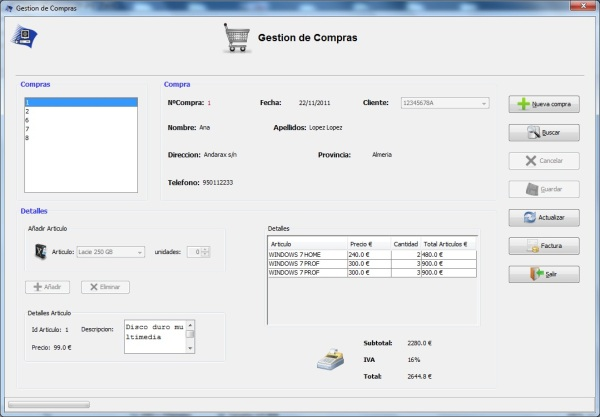

Gestion de Compras
Gestion de Compras
Desde el menu gestion de compras se gestionaran las compras del sistema
Se podra dar de alta,ver,mostrar la factura y buscar compras. El menu esta dividido en dos, una parte donde semostrara la informacion de la compra(nuemro de compra, cliente ,etc.) y otra parte
donde se mostraran los articulos de la compra pudiendo añadir y eliminar articulos a cada compra
Imagen del menu Gestion de Compras.

Las opciones del menu gestion de Compras son:
- Nuevo : para dar de alta una nueva compra.
- Cancelar : este boton se habilita despues de un alta y sirve para cancelar un alta.
- Buscar. : Para buscar una compra.
- Factura. : Para visualizar la factura.
- Guardar : para guardar los cambios realizados.
- Actualizar : deshace todos los cambios sin guardar y actualiza la lista de compras con los datos de la base de datos.
- Salir : Cierra el menu de gestion de Compras.